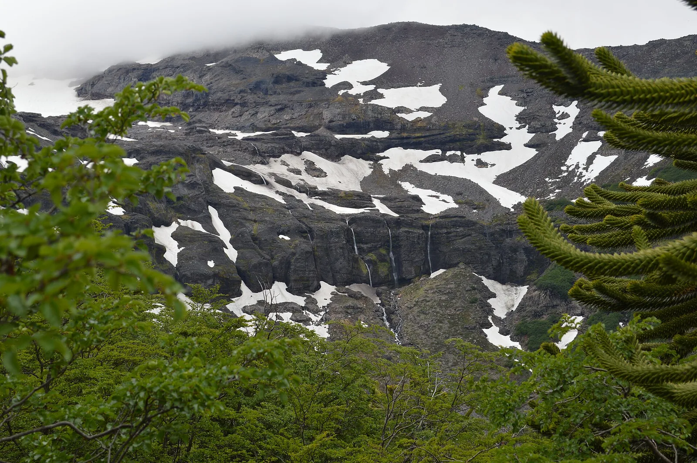
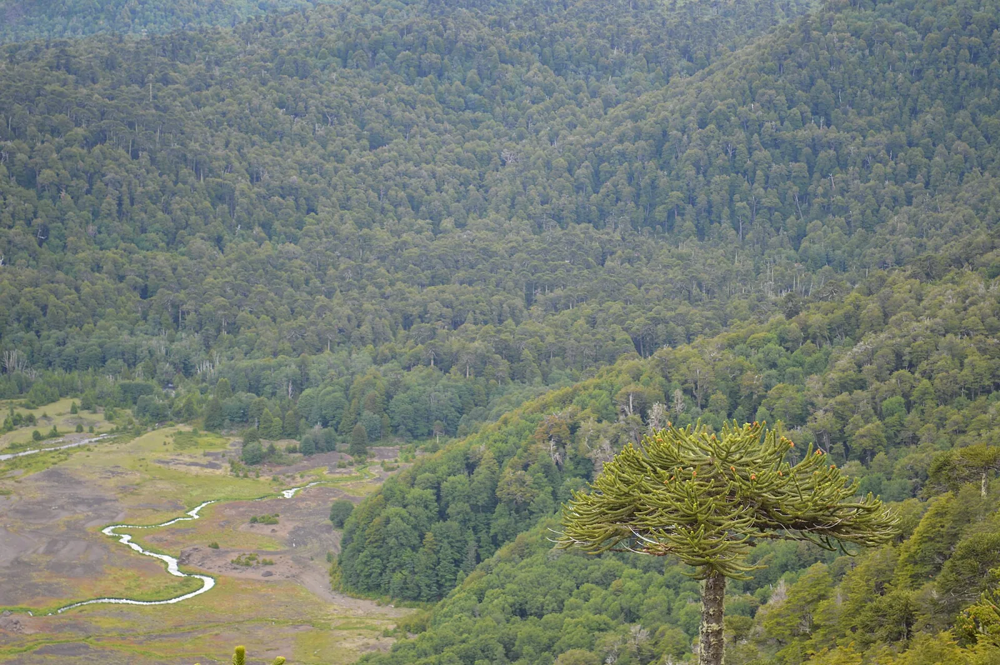
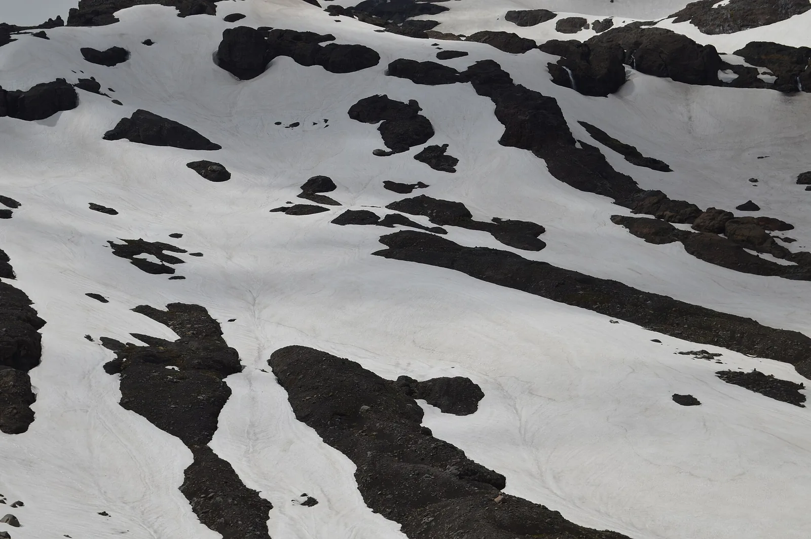

S4 · Sur
S4 · Süden
S4 · South
Bosques de araucarias
Vi bosques de araucarias de más de mil años
Ich sah Araukarienwälder, über tausend Jahre alt
I saw araucaria forests more than a thousand years old
Información
La araucaria, o pehuén, es un árbol de vida muy larga: se midieron ejemplares de hasta 1.021 años. Sus bosques ocupan unos 2.611 kilómetros cuadrados en la cordillera, entre Chile y Argentina, y la mayor parte está dentro de parques y reservas.
La especie está clasificada en peligro. Se estima una reducción de al menos el 30 % de su área de ocupación en los últimos 360 años. En Chile fue declarada Monumento Natural por decretos sucesivos en 1974, 1976 y 1987.
Information
La araucaria, o pehuén, es un árbol de vida muy larga: se midieron ejemplares de hasta 1.021 años. Sus bosques ocupan unos 2.611 kilómetros cuadrados en la cordillera, entre Chile y Argentina, y la mayor parte está dentro de parques y reservas.
La especie está clasificada en peligro. Se estima una reducción de al menos el 30 % de su área de ocupación en los últimos 360 años. En Chile fue declarada Monumento Natural por decretos sucesivos en 1974, 1976 y 1987.
Information
La araucaria, o pehuén, es un árbol de vida muy larga: se midieron ejemplares de hasta 1.021 años. Sus bosques ocupan unos 2.611 kilómetros cuadrados en la cordillera, entre Chile y Argentina, y la mayor parte está dentro de parques y reservas.
La especie está clasificada en peligro. Se estima una reducción de al menos el 30 % de su área de ocupación en los últimos 360 años. En Chile fue declarada Monumento Natural por decretos sucesivos en 1974, 1976 y 1987.
La araucaria está clasificada en peligro. Se estima una reducción de al menos el 30 % de su área de ocupación en los últimos 360 años.
Los bosques que quedan ocupan unos 2.611 kilómetros cuadrados en la cordillera, y la mayor parte está dentro de parques y reservas: lo que sobrevive, sobrevive protegido.
La araucaria está clasificada en peligro. Se estima una reducción de al menos el 30 % de su área de ocupación en los últimos 360 años.
Los bosques que quedan ocupan unos 2.611 kilómetros cuadrados en la cordillera, y la mayor parte está dentro de parques y reservas: lo que sobrevive, sobrevive protegido.
La araucaria está clasificada en peligro. Se estima una reducción de al menos el 30 % de su área de ocupación en los últimos 360 años.
Los bosques que quedan ocupan unos 2.611 kilómetros cuadrados en la cordillera, y la mayor parte está dentro de parques y reservas: lo que sobrevive, sobrevive protegido.
Fuentes
Quellen
Sources
- Ministerio del Medio Ambiente, Chile, Ficha de especie clasificada: Araucaria araucana (PDF) — https://clasificacionespecies.mma.gob.cl/wp-content/uploads/2019/10/Araucaria_araucana_14RCE_FINAL.pdf
Galería
Galerie
Gallery



Fuentes
Quellen
Sources
- Ministerio del Medio Ambiente, Chile, Ficha de especie clasificada: Araucaria araucana (PDF) — https://clasificacionespecies.mma.gob.cl/wp-content/uploads/2019/10/Araucaria_araucana_14RCE_FINAL.pdf consultado 2026-10-05abgerufen 2026-10-05accessed 2026-10-05
- Sistema de Información de Biodiversidad, Argentina, Araucaria araucana (pehuén) — https://sib.gob.ar/especies/araucaria-araucana consultado 2026-10-05abgerufen 2026-10-05accessed 2026-10-05